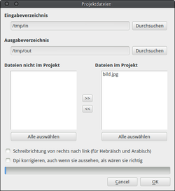
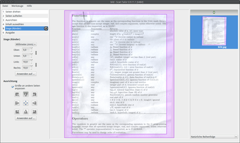
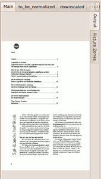
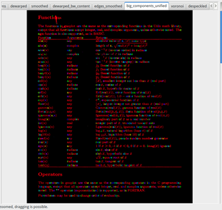
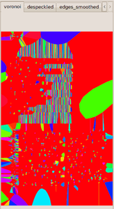
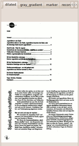

Scan Tailor
Dieser Artikel wurde für die folgenden Ubuntu-Versionen getestet:
Ubuntu 14.04 Trusty Tahr
Zum Verständnis dieses Artikels sind folgende Seiten hilfreich:
Scan Tailor  (Github) ist ein in Russland entwickeltes Programm, mit dem Scans bearbeitet werden können, um z.B. bessere Ergebnisse bei einer anschließende Texterkennung zu erzielen oder sie für die Archivierung zu optimieren. So können u.a. Seiten aufgeteilt, gerade gezogen und unerwünschte Ränder entfernt werden. Die Bearbeitung kann automatisiert erfolgen. Es lassen sich aber auch umfangreiche manuelle Einstellungen für verschiedene Aufgaben vornehmen. Die bearbeiteten Vorlagen werden dann im tif-Format abgelegt.
(Github) ist ein in Russland entwickeltes Programm, mit dem Scans bearbeitet werden können, um z.B. bessere Ergebnisse bei einer anschließende Texterkennung zu erzielen oder sie für die Archivierung zu optimieren. So können u.a. Seiten aufgeteilt, gerade gezogen und unerwünschte Ränder entfernt werden. Die Bearbeitung kann automatisiert erfolgen. Es lassen sich aber auch umfangreiche manuelle Einstellungen für verschiedene Aufgaben vornehmen. Die bearbeiteten Vorlagen werden dann im tif-Format abgelegt.
Das Scannen, eine Texterkennung, oder das Überführen der einzelnen Ergebnis-Bilder in mehrseitige Dateien muss allerdings mit anderen Programmen erfolgen. Zur Erstellung von E-Books eignet sich z.B. djvubind. Das Programm wird stetig weiterentwickelt, ggf. lohnt es sich, eine "git"-Version zu installieren.
Installation¶
Scan Tailor ist in den Ubuntu-Paketquellen vorhanden. Installiert[1] werden muss das Paket:
scantailor (universe)
 mit apturl
mit apturl
Paketliste zum Kopieren:
sudo apt-get install scantailor
sudo aptitude install scantailor
Manuelle Installation¶
Die Version in den Quellen ist ggf. nicht aktuell. Im letzten stabilen Release sind neben Fehlerbehebungen sinnvolle weitergehende Funktionen enthalten, so z.B. die manuelle Auswahl von Bildern im "Mixed"-Modus.
Alternativ kann der aktuelle Quelltext der Entwicklungs-Version über Git aus dem Github-Repository mit folgendem Befehl heruntergeladen werden:
git clone https://github.com/scantailor/scantailor.git
Zum Kompilieren müssen folgende Pakete installiert sein:
cdbs
debhelper
cmake
libqt4-dev
libjpeg-dev
libpng12-dev
libtiff4-dev
libxrender-dev
libboost-test1.46-dev ( in Trusty libboost-test1.54-dev)
libqt4-opengl-dev
mit apturl
Paketliste zum Kopieren:
sudo apt-get install cdbs debhelper cmake libqt4-dev libjpeg-dev libpng12-dev libtiff4-dev libxrender-dev libboost-test1.46-dev libqt4-opengl-dev
sudo aptitude install cdbs debhelper cmake libqt4-dev libjpeg-dev libpng12-dev libtiff4-dev libxrender-dev libboost-test1.46-dev libqt4-opengl-dev
Der Quellcode der aktuellen stabilen Version kann von sourgeforge.net  bezogen werden.
bezogen werden.
Hinweis!
Fremdsoftware kann das System gefährden.
Das Archiv herunterladen und entpacken[2]. Das Paket wird mittels cmake (dabei darauf achten, dass das Verzeichnis, in dem die Dateien gespeichert werden, nicht nur einfach scantailor heißt, da sonst das Programm nicht erstellt werden kann!) und anschließender Kompilierung[4] erstellt und installiert[5].
Das Programm wird im Terminal gestartet[6]. Komfortabler ist es, sich einen Starter z.B. im Hauptmenü anzulegen[7].

Bedienung¶
Scan Tailor ist für die Stapelverarbeitung gedacht, daher lassen sich auch nur ganze Ordner mit Bild-Dateien öffnen ("File -> New Project..."). Die Dateien werden im Import-Dialog angezeigt, alle Dateien in verarbeitbaren Formaten (.tif/tiff, .jpg/jpeg, .png) werden zunächst aufgenommen; es lassen sich dann aber einzelne Daten an oder abwählen. Die Auswahl kann für mehrere Ordner wiederholt werden, die jeweils gewählten Dateien bleiben im Projekt. Nicht unterstützte Datei-Formate werden grau angezeigt.
Auch der Ausgabe-Ordner kann ausgewählt werden, Standard ist, einen /out-Ordner im zuletzt gewählten Eingabe-Ordner zu erstellen, und die Resultate dort abzulegen.
Empfohlen wird, keine Scharz-Weiß/Strichzeichnungen als Vorlagen einzusetzen, sondern Bildmaterial in Graustufen oder Farbe zu verwenden. Die Benutzung von .jpg-Daten ist zwar möglich, wird aber aufgrund der auftretenden Qualitätseinbußen dieses nicht-verlustfreien Formats nicht empfohlen.
Falls Bilddateien mit offensichtlich inkorrekten dpi-Angaben importiert werden sollten, gibt Scan Tailor eine Warnmeldung aus, und bietet die Möglichkeit, diese Werte zu korrigieren.
Die Bearbeitung selbst wird in sechs aufeinander aufbauenden Schritten vorgenommen (die z.T. nur bei Bedarf vorgenommen werden müssen). Die Schritte finden sich im linken Sidebar des Hauptfensters; durch Anklicken des Pfeils in den einzelnen Zeilen wird jeweils die Stapelverarbeitung für alle bisher vorgenommenen Schritte durchgeführt. Die Bearbeitung kann mit Drücken der großen Stop-Taste, die im mittleren Bereich während längerer Bearbeitungsphasen erscheint, abgebrochen werden. Die vorgenommenen Änderungen werden erst mit Abschluss des Projektes ("Output") auf der Festplatte gespeichert.
Die gewählten Bilder werden rechts im Hauptfenster angezeigt. Eine späteres Hinzufügen ("Insert before.../Insert after...") und Entfernen ("Remove from project") von Bilddateien (und so indirekt auch eine Neusortierung) ist in den ersten beiden Bearbeitungsschritten mit Öffnen des Kontextmenüs über  möglich. Alternativ können die ausgegebenen .tiff-Dateien vor der Weiterverarbeitung sortiert werden.
möglich. Alternativ können die ausgegebenen .tiff-Dateien vor der Weiterverarbeitung sortiert werden.
Die Bilddarstellung im mittleren Bereich lässt sich per Mausrad  zoomen und mit gedrückter
zoomen und mit gedrückter  verschieben, um Details besser erkennen zu können.
verschieben, um Details besser erkennen zu können.

Bearbeitungsschritte¶
Die Bilder können bei Bedarf gedreht ("1: Fix Orientation") werden; über "Apply to..." lässt sich festlegen, für welche Seiten die Drehung angewendet werden soll. Mit "2: Split Pages" könne die Vorlagen nach verschiedenen Mustern aufgeteilt werden (z.B. zwei Buchseiten auf einem Scan; die mittlerer Linie lässt sich dabei mit der blauen Linie manuell in die richtige Position bringen). "3: Deskew" sorgt für eine gerade Ausrichtung der Scans, manuell kann die Ausrichtung neben der Angabe des Winkels bequemer mit der Maus über die blauen Knöpfe im Hauptfenster erfolgen.
Mit "4: Select Content" wird der zu verwendende Ausschnitt festgelegt. Die automatische Auswahl ist bei kleinen Bildelementen am Rande nicht immer zuverlässig, so werden z.B. Seitenzahlen leicht "übersehen". Ein falsch gewählter Ausschnitt lässt sich verschieben, oder über im Hauptfenster wieder löschen, und dann neu erstellen.
"5: Page Layout" wird verwendet, um für die auszugebenden Dateien neue Seitenränder ("Margins") festzulegen, die entweder für recht/links und oben/unten gleich gewählt, aber auch frei festgelegt werden können. Über die Schaltfläche "Apply To..." kann ausgewählt werden, welche Seiten so bearbeitet werden sollen. Außerdem lässt sich die Ausrichtung ("Alignment") innerhalb des gewählten Rahmens festlegen. Möglich ist eine einheitliche Ausrichtung für alle Seiten des Projektes, diese Orientierung kann an der breitesten/höchsten Seite ("widest/tallest Page") des Projektes erfolgen. Eine Anpassung kann durch Ziehen der lilafarbenen Markierungen mit der erfolgen, die Veränderungen erfolgen im Verhältnis zu den Seitenrändern. Ggf. sichtbare gestrichelte Linien zeigen den Bezug zur jeweils höchsten/breitesten Seite im Projekt.
Das Ergebnis wird dann über "6: Output" gespeichert. Hier lässt sich zunächst die Auflösung anpassen ("Output Resolution" in DPI = "dots per inch"). Standard sind 600 dpi, wer allerdings z.B. eine Texterkennung mit Cuneiform-Linux anschließen möchte, sollte hier 300 dpi wählen.
Über "Mode" wird festgelegt, wie die Ergebnisse ausgegeben werden sollen, dabei sind jeweils unterschiedliche weitere Einstellungen möglich. Bei Schwarz-Weiß und im "Mixed"-Modus lässt sich "despeckle" (Entflecken) aktivieren, Vorsicht ist allerdings geboten, damit nicht ggf. wichtige Bildelemente (i-Punkte, Kommata etc.) entfernt werden. Darunter lässt sich mit dem Schieberegler die Linienstärke der Buchstaben festlegen - dabei müssen ggf. je nach Auflösung unterschiedliche Werte verwendet werden, um ein befriedigendes Ergebnis zu erzielen.
Ist Farbe/Graustufen ("Colour/Grayscale") ausgewählt, können die bei der Einrichtung festgelegten Ränder weiß ausgegeben werden ("White margins"). Wenn das der Fall ist, kann außerdem über "Equalize illumination" der Hintergrund des eigentlichen Bildes ebenfalls weiß ausgegeben werden (sinnvoll z.B. bei "vergilbten" Vorlagen).
Der sogenannten "Mixed Mode" führt dazu, dass Bilder anders als Textpassagen bearbeitet werden; das ist besonders für Vorlagen mit integrierten (Farb-)Fotos sinnvoll. Der Text wird Schwarz-Weiß ausgegeben, die Bilder in Farbe/Graustufen. Die Erkennung ist relativ gut.
Ab Version 0.9.7.2 können bei "schwierigen" Vorlagen die Bilder auch manuell per Maus ausgewählt werden. Um Bilder individuell festzulegen, muss in die Ansicht über den Seitenreiter "Picture Zone" gewechselt werden. Unter dem Mauszeiger erscheint ein roter Punkt, durch -Klick wird der erste Fixpunkt festgelegt, der Umriss kann dann mit beliebig vielen weitere Punkten (-Klick) erzeugt werden, die Bereichswahl wird mit nochmaliger Anwahl des ersten Punktes abgeschlossen. So sind sehr genaue Eingrenzungen der Bilder möglich. Mit -Klick in den Umriss erscheinen im Kontextmenü weiter Optionen , z.B. auch den Bereich wieder zu entfernen.
Es kann bei Bedarf zu allen Schritten der Bearbeitung nochmals zurückgegangen werden, um Korrekturen zu erstellen; die Veränderungen werden dann mit erneutem Aufruf der Stapelverarbeitung am Ende gespeichert. Sinnvollerweise werden dabei nur die tatsächlich veränderten Seiten neu berechnet und ausgegeben.
Die Ergebnisse werden erstellt (das kann je nach Größe des Projektes und Kapazität des Rechners auch etwas länger dauern, es lässt sich angeben, dass bei Abschluss der Verarbeitung ein Tonsignal ausgegeben wird), im ausgewählten oder dem erstellten out-Ordner durchnummeriert als .tiff-Dateien abgelegt und können dann weiterverarbeitet werden.
Da die ausgegebenen .tiff-Dateien trotz verwendeten Kompressions-Algorithmen (G4Fax, oder LZW) je nach Modus sehr groß ausfallen (A4 in 300 dpi von 1 MB bis zu ~ 15 MB!), ist für die Speicherung und Weiterverarbeitung eine Konvertierung mit z.B. mit convert (siehe ImageMagick) beispielsweise ins ebenfalls verlustfreie .png-Format sinnvoll.
Konfiguration¶
"Tools -> Settings..." ist ausbaufähig, um später weiter Möglichkeiten in das Programm integrieren zu können. Momentan lässt sich dort nur die 3D-Beschleunigung für die Darstellung der grafischen Oberfläche aktivieren. Standardmäßig ist diese abgeschaltet, weil es dabei Probleme mit einigen Grafikkarten geben soll.
Debugging Modus¶
Wenn in den Einstellungen "Tools -> Debug" aktiviert wird, erscheinen im mittleren Fenster beim Modus "Mixed" und "Black and White" eine Vielzahl von Reitern, in denen verschiedene Zwischenschritte und Effekte für die Ausgabe ausgegeben werden. Besonders hervorzuheben ist "big_component_unified" oder gleich "voronoi", das interessante Farben in langweilige Texte bringt; sinnvoll wäre z.B. für sehr schwache Vorlagen die Einstellung "dilated".
|  |
| Main (Normalausgabe) |
|  |
| big_component_unified |
|  |
| voronoi |
|  |
| dilated |
Diese Einstellungen lassen sich allerdings leider nicht für den Export nutzen...
Ausblick¶
Die Entwicklerversion des Programm bietet bereits eine Einstellung zum "Dewarping", also Seitenkrümmungen, die beim Scannen von Büchern fast unvermeidlich sind, zu entfernen. Außerdem lässt sich die Stärke der Fleckenentfernung in vier Abstufungen einstellen, das Ergebnis wird im Mittelfenster als eigener Reiter angezeigt, die entfernten Elemente werden rot dargestellt.
Tastenkürzel¶
| Scan Tailor | |
| Tasten | Funktion |
| Strg + N | New Project (Neues Projekt erstellen) |
| Strg + O | Open Project (bestehendes Projekt öffnen) |
| Strg + S | Save Project (Projekt speichern) |
| Strg + W | Close Project (Projekt schließen) |
| Strg + Q | Quit (Beenden) |
Alternativen¶
unpaper als reines Kommandozeilen-Werkzeug liefert noch wesentlich differenziertere Bearbeitungsmöglichkeiten. Das Programm ist allerdings eher für vollautomatisierte Stapel-Verarbeitung geeignet, Näheres unter unpaper.
Links¶
Scan Tailor bringt Dokumente in Form
 - heise Open Source, 01/2013
- heise Open Source, 01/2013Texterkennung
 Übersichtsartikel
Übersichtsartikel

- Erstellt mit Inyoka
-
 2004 – 2017 ubuntuusers.de • Einige Rechte vorbehalten
2004 – 2017 ubuntuusers.de • Einige Rechte vorbehalten
Lizenz • Kontakt • Datenschutz • Impressum • Serverstatus -
Serverhousing gespendet von